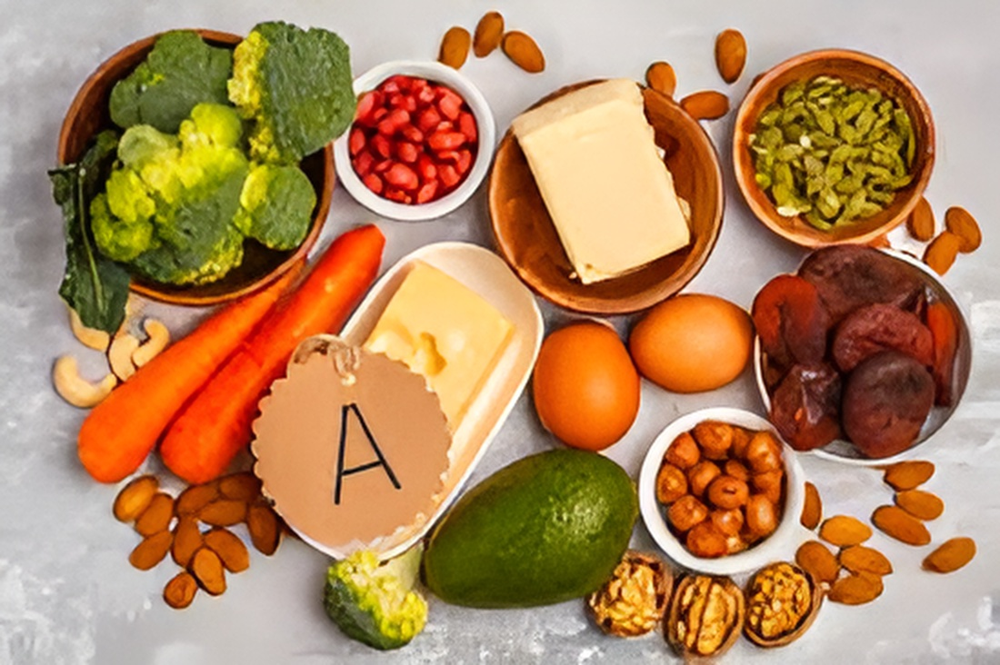
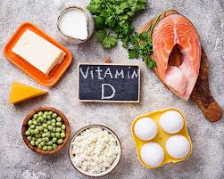
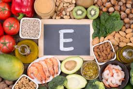
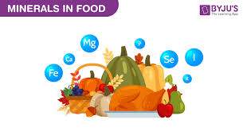

ویتامینهای مورد نیاز برای ورزشکاران
بدن ورزشکاران برای عملکرد بهتر، به ویتامینها و مواد معدنی کافی نیاز دارد. این مواد نقش مهمی در ترمیم عضلات، تولید انرژی و حفظ تمرکز دارند. در ادامه با مهمترین ویتامینهای مورد نیاز ورزشکاران آشنا میشویم:
🟢 ویتامین A (آ)

تقویت بینایی، رشد سلولی و حفظ ایمنی از وظایف ویتامین A است. ورزشکاران
با مصرف کافی این ویتامین، توان ترمیم عضلات و جلوگیری از بیماریها را
افزایش میدهند.
منابع: هویج، اسفناج، لبنیات، جگر.
🟡 ویتامینهای گروه B

این گروه از ویتامینها در تبدیل غذا به انرژی نقش حیاتی دارند. آنها
خستگی را کاهش میدهند و تمرکز ذهنی را افزایش میدهند.
منابع: گوشت، تخممرغ، غلات سبوسدار، مغزها.
🟠 ویتامین C (ث)

ویتامین C یک آنتیاکسیدان قوی است که باعث کاهش التهاب عضلات پس از
تمرین میشود و سیستم ایمنی را تقویت میکند.
منابع: پرتقال، کیوی، فلفل دلمهای، توتفرنگی.
🔵 ویتامین D (د)

ویتامین D به جذب کلسیم و تقویت استخوانها کمک میکند. ورزشکارانی که
کمبود این ویتامین دارند، بیشتر در معرض آسیبهای عضلانی هستند.
منابع: نور خورشید، ماهی سالمون، لبنیات غنیشده.
⚪ ویتامین E (ای)

این ویتامین سلولهای بدن را از آسیب محافظت میکند و در بازسازی سریعتر
عضلات پس از تمرین نقش دارد.
منابع: مغزها، روغن زیتون، آووکادو.
🟣 ویتامین K

ویتامین K باعث انعقاد درست خون و سلامت استخوانها میشود و به ترمیم
آسیبهای کوچک عضلانی کمک میکند.
منابع: کلم، کاهو، سبزیجات برگ سبز.
💧 مواد معدنی مکمل
ورزشکاران علاوه بر ویتامینها، به مواد معدنی مانند کلسیم، منیزیم، آهن و زینک نیاز دارند. این مواد باعث استحکام استخوانها، کاهش گرفتگی عضلات و تقویت انرژی میشوند.
⚡ نکات پایانی
ویتامینها را از غذاهای طبیعی بگیرید نه فقط مکملها. مصرف بیش از اندازهی بعضی ویتامینها مضر است، پس همیشه با پزشک یا متخصص تغذیه مشورت کنید. بدن سالم و ذهن قوی، ترکیبی است که یک ورزشکار موفق به آن نیاز دارد.